Zooming in the big picture: from fundamental questions to the bolts and nuts of my projects
My projects in the domain
Khristian Kotov
Just enough of particle physics
The Large Hadron Collider and particle detectors
Compact Muon Solenoid detector
Muon Endcap subsystem
Electronics
Track-Finding
Standard Model is a universal theory describing microscopic world with incredible precision
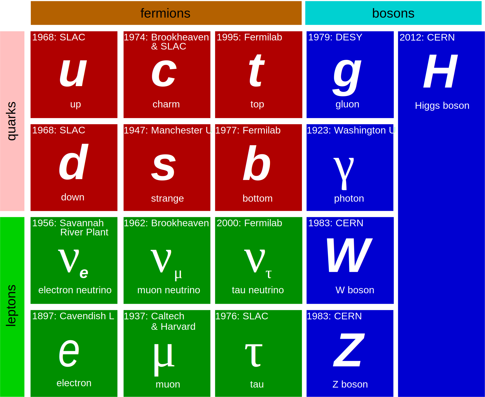
Quarks form protons and neutrons like triplets of the four bases form amino acids (e.g. Glutamine = CAG; \(p = uud\), \(n = udd\))
But particles easily turn into each other (e.g. \(n \rightarrow p^+ + e^- + \bar{\nu}_e\) when \(d \rightarrow u + W^-\))
Focus on accurately measuring this dynamics and look for deviations from predictions
There theory is complete, but there are still many open questions; some of those:
Dark matter observed in skies: what it is and where would it fit in the table above?
What happens beyond our energy reach where the model no longer describes nature?
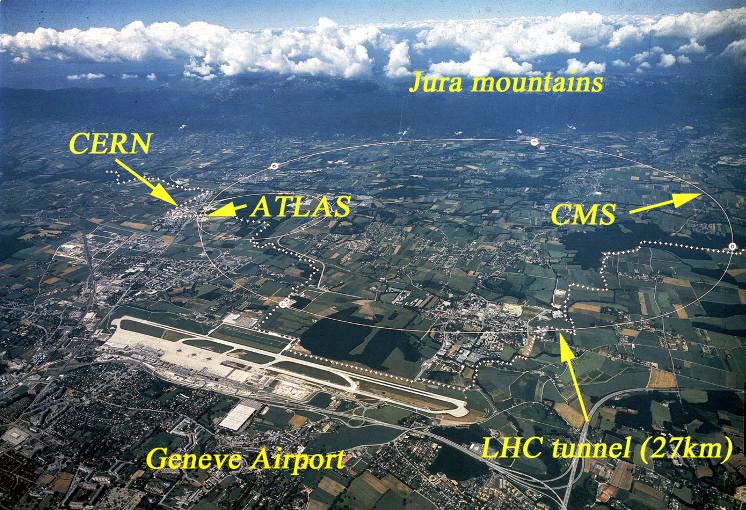
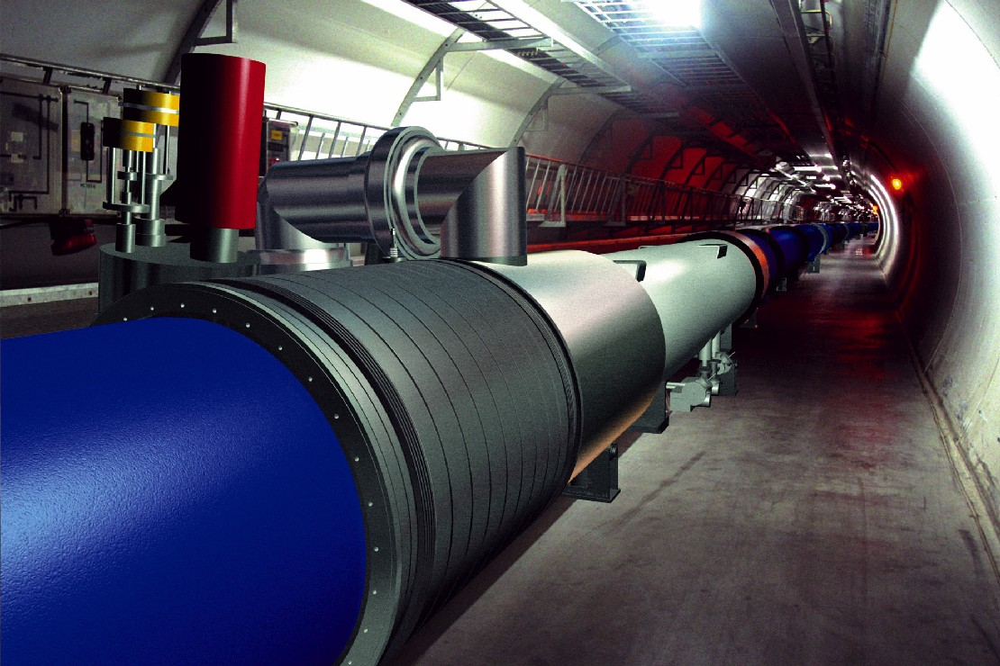
Collision energy \(\sim 10^4\) proton masses
Collision frequency \(\sim 40 MHz\) (every 25 ns)
Data rate \(\sim 20 PB\) per year
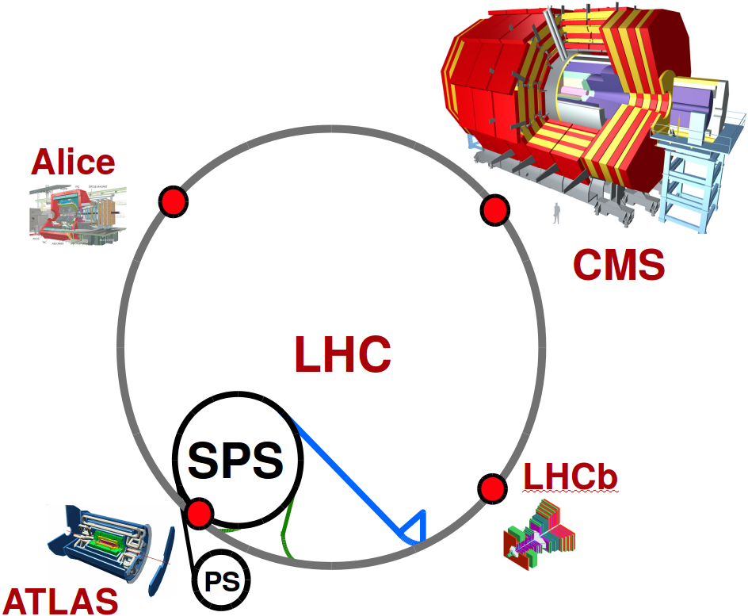
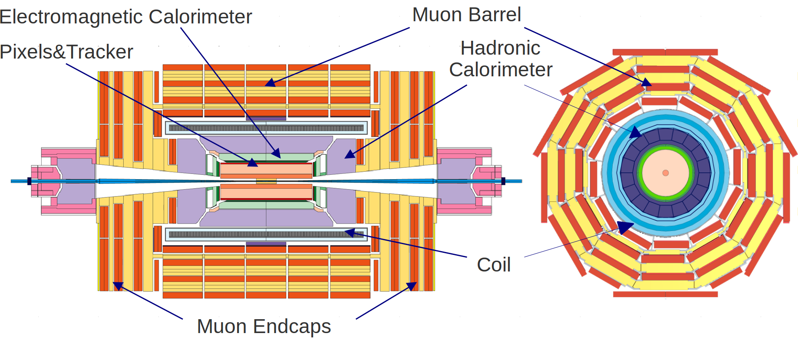
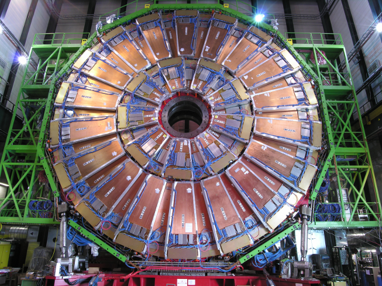
6,000 m\(^2\) sensitive area
2,000,000 anode wires (200,000 channels)
250,000 strip (analog) channels
540 overlapping chambers
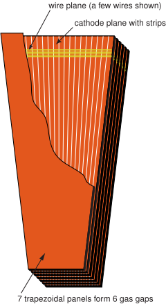
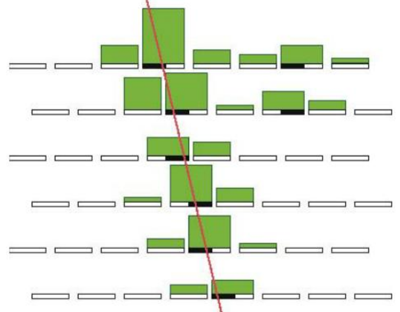
Readout:
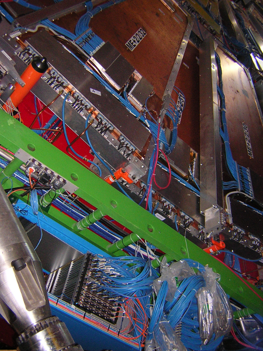
Link track segments into a trajectory and measure particle's momentum from its bending:
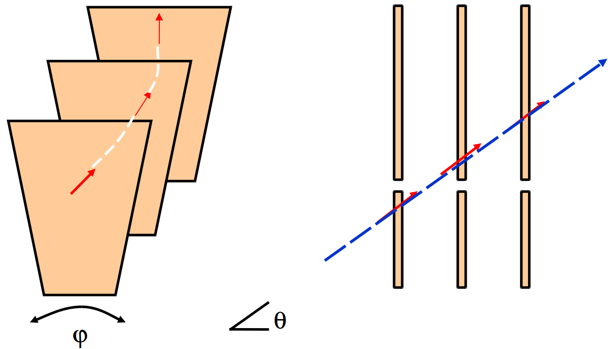
Time constraint: system completes the arithmetic within 6-10 external clock ticks
The logic is implemented in the main Xilinx FPGA using Vivado framework (i.e. firmware in C++)
Assigning particle momentum using Machine Learning
Hardware-oriented projects
Conditions' logging system (online DB to offline DB)
Data analysis at scale
Other projects
Multiple scattering and non-uniform \(B\)-field make analytic momentum assignment impractical
Using simulated events I train a model predicting track's momentum from measured hits:
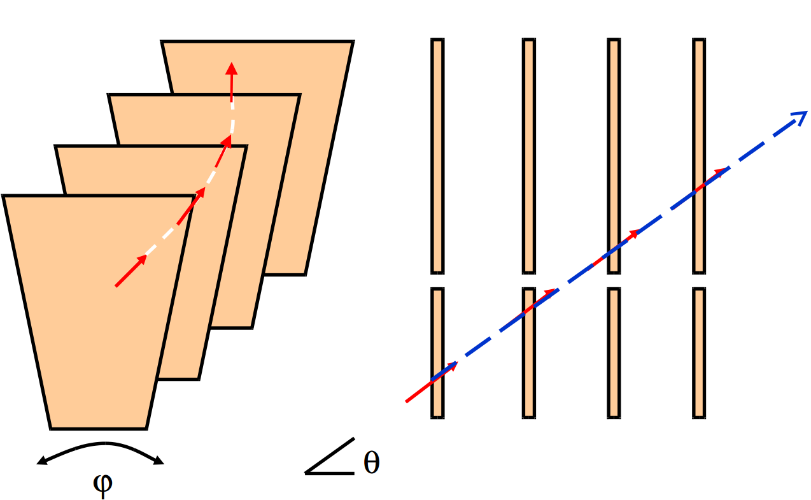
| type | measurement in station |
|---|---|
| \(\theta\) | 2 |
| \(\Delta\phi\) | 1-2, 1-3, 1-4, 2-3, 2-4, 3-4 |
| \(\Delta\theta\) | 1-2, 1-3, 1-4, 2-3, 2-4, 3-4 |
| bend | 1, 2, 3, 4 |
Performance is studied for random forests and boosted trees in R, and neural net in H2O
Random Forests are re-implemented for the existing track-finder simulation package in C++
Details (performance metrics, model selection, input compression) are given in \([\)1,2,3,4\(]\)
Firmware for the Module Management Controllers (MMC) on the Track-Finding boards:
$\mu$TCA board is managed (i.e. power sequences, monitoring, ports, ...) by a microcontroller
protocols for communicating with crate controller are implemented in CERN MMC C library
I've customized the firmware \([\)1,2\(]\) for our boards; it runs in production fine for >1 year
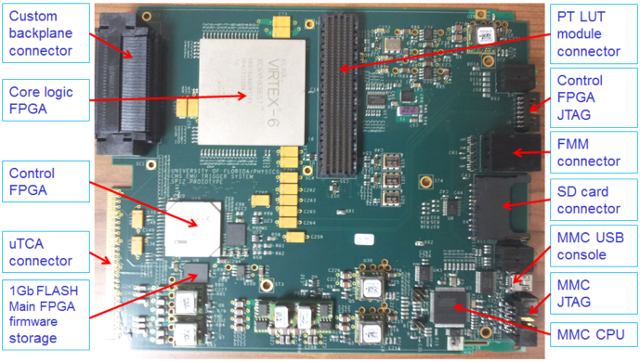
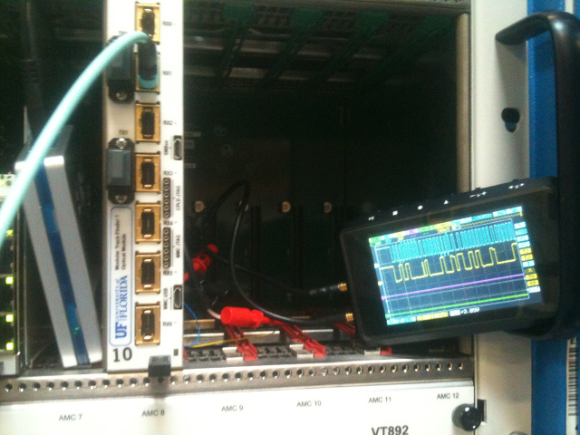
Hardware emulators in CMSSW rely on framework in fetching their configuration from CondDB
It is stored as boost-serialized C++ objects indexed by symbolic tag and sequential run number
In contrast, hardware configuration is XML stored in another DB and indexed by symbolic keys
For each run my automated system \([\)1,2,3\(]\) parses XMLs and constructs C++ objects in CondDB
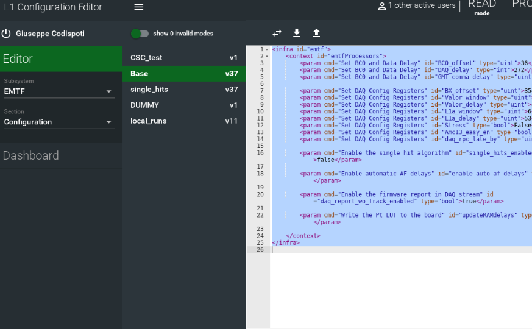

Most of LHC analyses require (repetitive) batch processing of hundreds of terabytes of data
Event-type data processing is easily parallelizable and done on grid and local condor clusters
While event selection is easy, the bulk of analyzer's work goes into estimating uncertainties
Once this is done, a likelihood is constructed at fit to the data (e.g. here) 1410.1149
conceptually (apart from tedious bookkeeping for multiple of samples)
Control and monitoring system for the Track-Finding (worked with/after Atanas) providing:
Data Quality Monitoring (DQM) for Endcap Muon system commissioning (old):
Custom-built (legacy) Track-Finder system production (old):
Event-type data analysis framework
Applied Linear Algebra (e.g. pca)
data processing in FPGAs
\[ \Large Backup \]
Model's accuracy = turn-on sharpness:

The only hardware implementation within the time constraints is via Look Up Table (LUT)
Truncate precision and drop weak predictors to fit input in 30 bits address of on-board RAM:
| \(\theta\) | \(\Delta\phi_{12}\) | \(\Delta\phi_{23}\) | \(\Delta\phi_{34}\) | \(S^\phi_{12,23}\) | \(S^\phi_{12,34}\) | \(\Delta\theta_{14}\) | bend | fr |
|---|---|---|---|---|---|---|---|---|
| [7:2] | [9:2] | [7:2] | [7:2] | 1 | 1 | [2:0] | 2,0,0,0 | 1,0,0,0 |